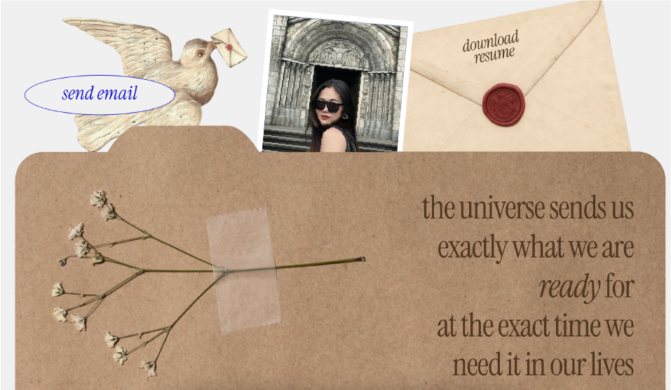

Portfolio Snapshot
Prapawit Intun is an US and Thai architect and computational-participatory design researcher working across architecture, AI, and community-centered design. Multidisciplinary designer (Architecture × Data × Interaction) focused on Bangkok, Thailand and Massachusetts, United States’s public life. She studied building participatory tools, mapping repair ecosystems, and prototyping responsive environments with biosignals (EEG/GSR) to support everyday care and sustainability.
INTUN
Founder of Participatory Citizen Lab, and De-Tech Southest Asia Foundation
Managing Director at PSK 4x4 Products Thailand
Managing Director at Chinglian TCM Clinic
Design Technology, Computational participation, policy platforms, and emotion-aware spatial systems.
Pam (Prapawit) Intun
Pam is a creative technologist and AI & robotics researcher working at the intersection of computer vision, large language models, augmented reality, robotics, design, and fabrication. A Silicon Valley Fellow ’26, she builds LLM and edge-AI systems that turn unstructured human input into machine-executable output, moving fluidly between academic research, industry, and hands-on practice with clients. She is the founder of Layerminds.AI and Participatory Citizen Lab; her AI-assisted permitting solution was selected for the White House Council on Environmental Quality’s Permitting Innovators Solutions Catalog, and features she developed were selected by OpenAI’s Builder Lounge at NY Tech Week and OpenAI DevDay 2026.
At Scrap Lab, founded by Singh Intrachooto (MIT 2002), she joined his lab to pursue her research with dignity, developing coffee-ground extrusion lines and textile baskets and learning to produce both machines and bio-materials. As a Research Associate in the Architectural Intelligence Research Group at Chulalongkorn University, she applies machine learning to architectural heritage and soft robotics in partnership with Kyoto University. Her expertise extends into biotechnology and living materials through Fabricademy, and she has established pre-, in-, and post-fabrication workflows for the construction industry — a foundation that also informs her role as Head of Research at PSK 4x4 Product Thailand, an automotive manufacturing business, where she explores new technologies and biomaterials in mobility.
With more than eight years in public participation, Prapawit founded LocalLoop, an LLM platform for community-led design piloted across 77 Thai cities and five U.S. cities in more than eight languages. It won the Global Grand Award and Sustainability Leadership Award at the International Sustainable Design Awards (ISDA) 2026 in Hong Kong and was named to TIME’s Best Inventions 2026. She won Best Use of Arduino App Lab for Hardware Hack, sponsored by Qualcomm, at Reality Hack @ MIT 2026, and received an Honorable Mention at the NASA Space Apps Challenge 2025.
Her work has been exhibited at Seattle Design Festival, NY Tech Week, Climate Crossing, the Harvard XR Conference at Harvard GSD, and in Singapore, with an upcoming showing at SXSW 2027. She has authored 5+ peer-reviewed publications, including ACADIA, the International Journal of Architectural Computing, the International Journal of Advances in Signal and Image Sciences, The Princeton Journal of Interdisciplinary Research (PJIR), the Journal of Cultural Analysis and Social Change, and the International Conference on Multidisciplinary Current Research, and serves as an invited reviewer for two Q1 journals.
Her research is fully funded by Thailand’s highly competitive White Elephant Scholarship and the C2F Research Fellowship from Chulalongkorn University, and her nonprofit work has been supported by the Society of Young Social Innovators (SYSI), Thai Health Promotion Foundation, AIDS Access, and SHMA. As a volunteer designer for Choduk Community Park, she contributed to a project that won the Monocle Design Award for Best for Kids in 2022. Her bachelor’s thesis, Space of Flow, won the Bronze Prize at the Asia Young Designer Awards, Thesis of the Year by national popular vote, and a UnIADA ’22 shortlisting among the world’s leading graduation projects; she graduated valedictorian with First-Class Honors and a Gold Medal conferred by Her Royal Highness Princess Maha Chakri Sirindhorn. Her master’s thesis on digital public participation was presented at the MIT Media Lab Gen AI Design Workshop 2025. She is pursuing a Professional Certificate in Innovation and Technology at MIT.
Prapawit is developing an AI safety and governance framework for the architectural profession in Southeast Asia, to be proposed to the United Nations and the Architectural Association, keeping AI systems subordinate to human judgment at critical decision points and examining how architects can collaborate with advanced technology through ethics, intellectual rigor, and reflective practice. This research has garnered recognition from the American Institute of Architects (AIA). Across research, industry, and community work, her practice rests on a single conviction: that emerging technology and material innovation are most powerful when they serve people and places, and that the profession must shape these tools rather than be shaped by them.
Portfolio
Selected projects, followed by the full record by category.Selected Projects (overview)
Based on 2019 to 2025Portfolio (by category)
Expandable evidence list for awards, memberships, media, jury service, contributions, publications, exhibitions, roles, and engagement.
1. Major National / International Awards Tap to collapse
2. Memberships in Selective Professional Associations Tap to expand
3. Media Coverage & Public Presentations Tap to expand
4. Service as a Judge / Critic Tap to expand
5. Original Contributions of Major Significance Tap to expand
6. Scholarly Publications Tap to expand
7. Exhibitions & Showcases Tap to expand
8. Leading / Critical Roles Tap to expand
9. Commercial Success & Public Engagement Tap to expand
Evidence links (collection)
Store supporting docs + posts here.Selected references
Quick links to public traces (press, posts, archives).
Research video
Artificial Intelligence in Architecture Group (Chulalongkorn University).
Contact
Replace with your real contact links if you want.Quick actions
Open the portfolio doc, then use the bottom tray to open interactive demos and events.
Note
This is a single-file website. Save as index.html and deploy with GitHub Pages.
